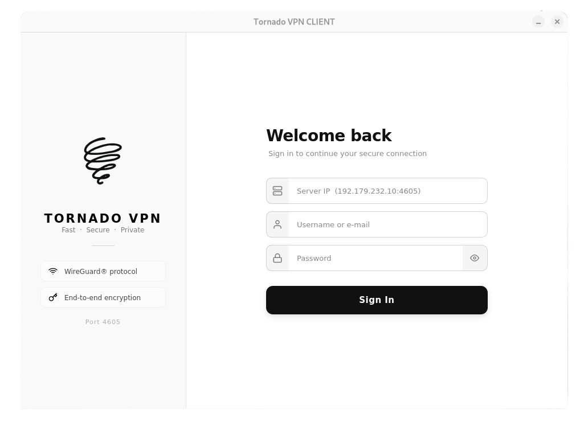
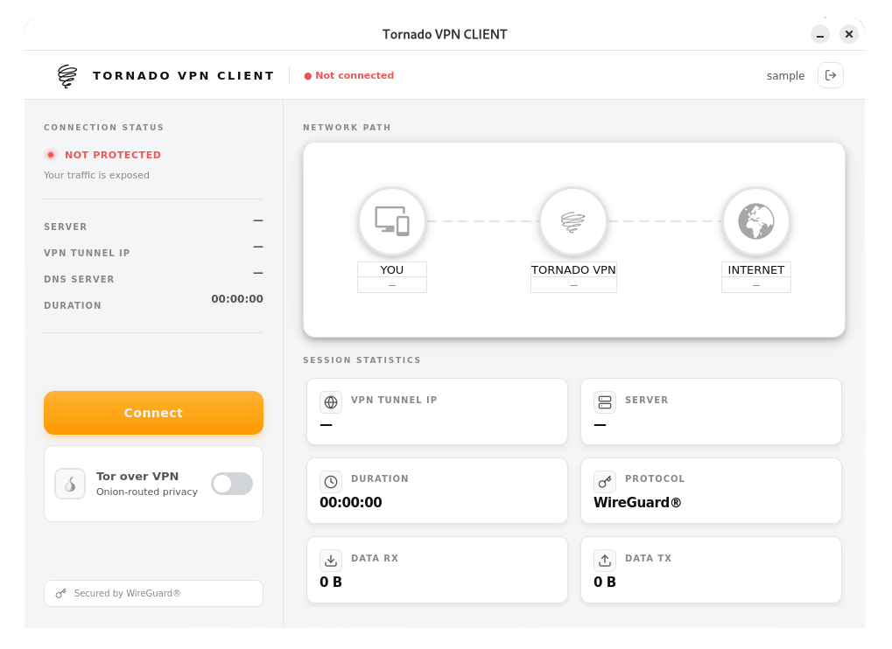
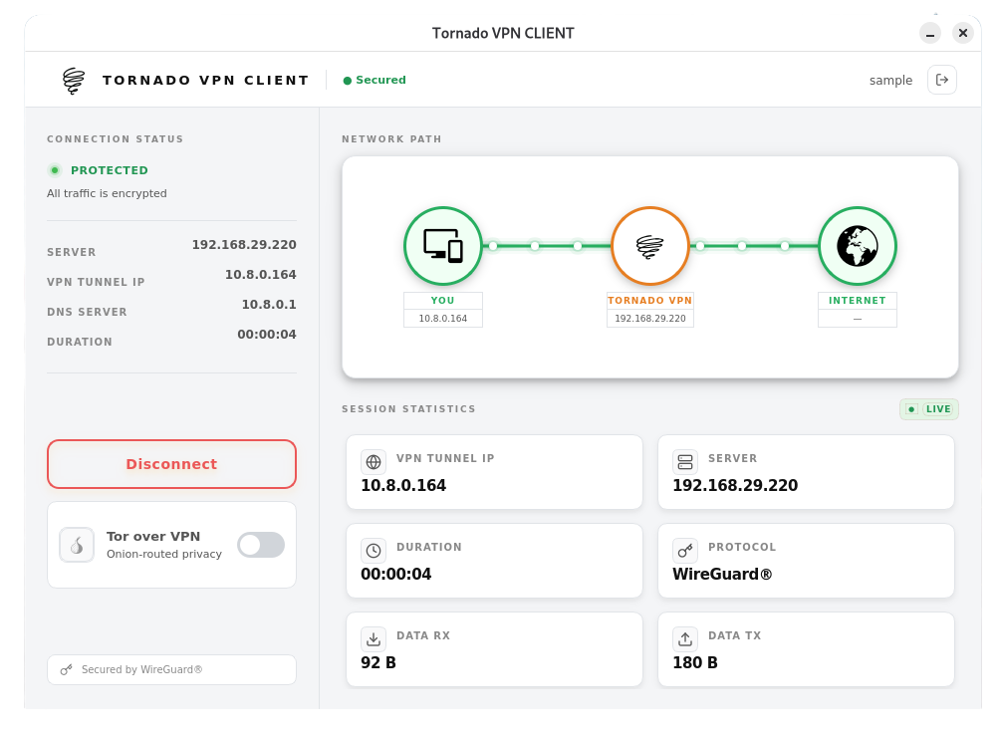
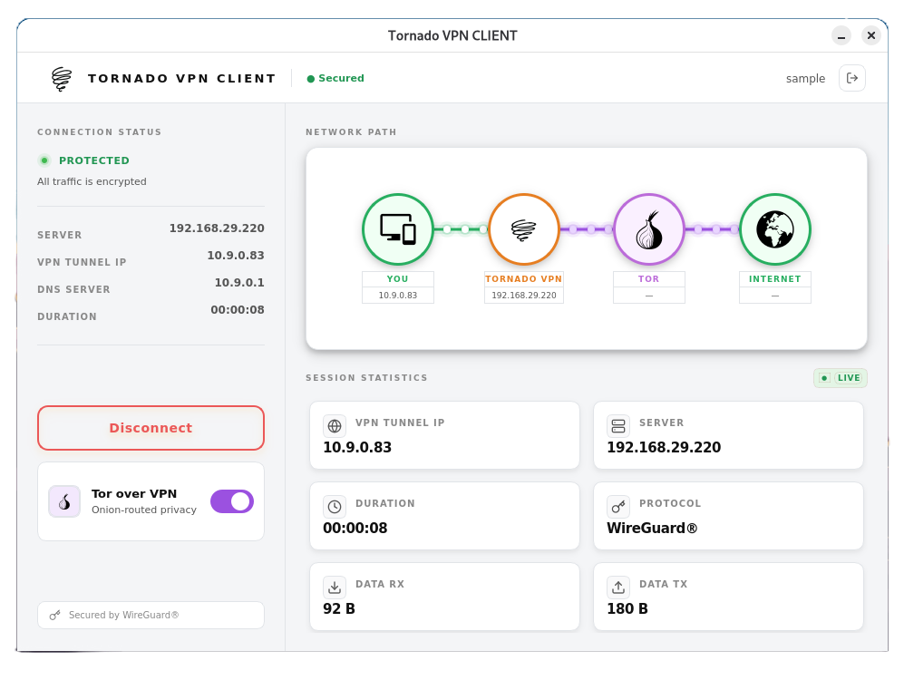

A self-hosted secure access platform combining WireGuard performance, Tor-aware routing, and real-time operations visibility. Full control. No network trust outsourced.
A master supervisor starts and monitors service processes defined in runtime config.
External access enters through two FastAPI surfaces. Internal contracts are
standardized over UDS sockets under /run/tornado.
Config-driven service sync, health ping, and restart automation via MASTER_service.py
WireGuard wg0 + wg1, Tor manager, routing and maintenance-path handling
Auth, session, user, IPAM, key rotator, OS/API service managers, log microservice
Redis for sessions & events, PostgreSQL for users, SQLite for log analytics
Standard VPN traffic runs on wg0 for maximum throughput. Policy-selected
traffic is routed through wg1 which exits via Tor, giving you
two distinct trust tiers on the same platform.
Login payloads are protected via X25519 ECDH + HKDF + AES-GCM before credential validation. Token issuance uses asymmetric JWT keypairs with overlap-aware verification during rotations, backed by Redis JTI revocation checks.
Sessions are created with Redis keys (vpn:session:*) and heartbeat sentinels
(vpn:session:*:hb). Expired heartbeat keys move sessions to offline, resumed
heartbeats recover them, and hard_ttl finalizes cleanup.
Operations are structured around dependency-first checks, targeted service remediation, and post-incident validation — backed by direct admin API control.
The client API handles encrypted login, token refresh, tunnel initiation, and heartbeat. The admin API exposes service management, user lifecycle, log analytics, Tor relay controls, and key-rotator actions.
The client apps in client/linux and client/windows provide encrypted
login, token refresh, session heartbeat, WireGuard tunnel lifecycle, and Tor-over-VPN mode.
Packaging flows are documented in docs/build_linux.md and docs/build_windows.md.
/auth/login → /vpn/initiate → /session/heartbeattornadovpn-client_*.deb)
Client login and server endpoint entry.

Main dashboard with connection controls.

Tor-over-VPN toggle and route visualization.

Live session statistics and connection status.
Download the official desktop clients for Linux and Windows. Both packages include encrypted authentication, automatic session management, and full Tor-over-VPN support.
Installation:
Linux: sudo dpkg -i tornadovpn-client_*.deb •
Windows: Run the installer and follow the setup wizard
Tornado VPN is open source and self-hostable. Get full control over your network trust, no subscriptions, no vendor lock-in. Star us on GitHub and join the community.
View on GitHub